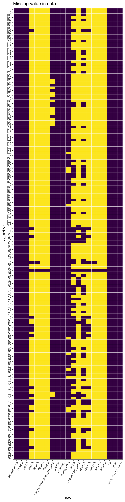
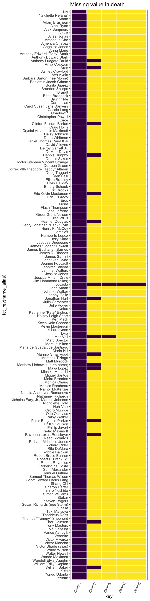
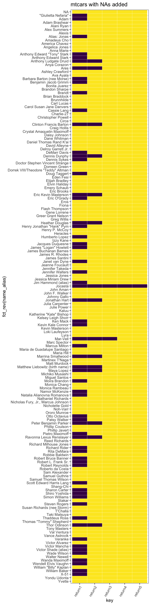
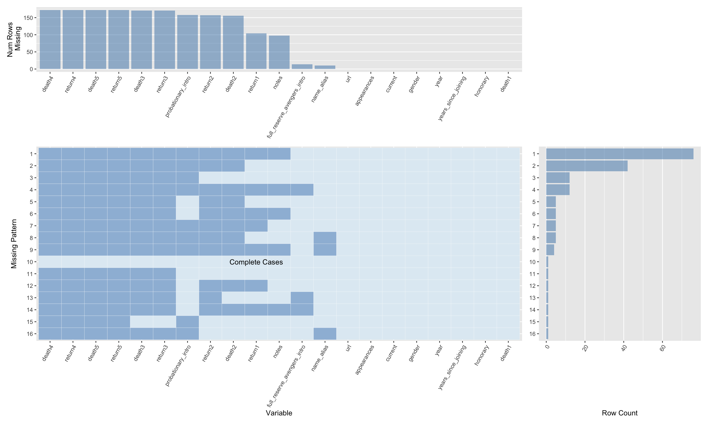
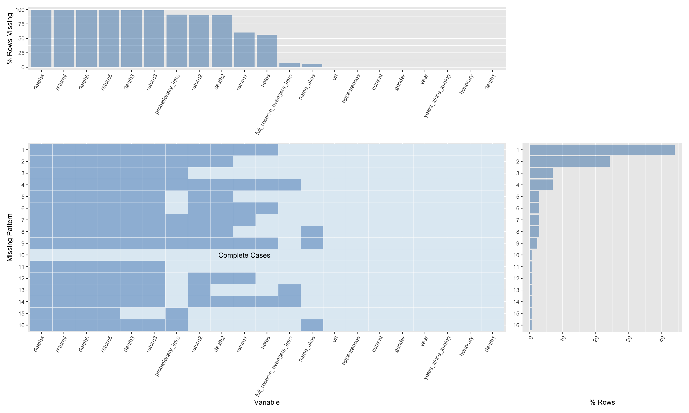

Chapter 4 Missing values
======= As what we mentioned in Final Project Data Check, we are working on the financial data, like the open and close prices of stocks. All these data are publicly available, so there is no missing values. Although we can regard non-trading days as missing value, in fact these missing values don’t matter at all because all public marketing behaviors stop at these days. Moreover, we are calculating some technical indicators, like moving average with different time span, so there will be some missing values (Null value) at the beginning of the data because there is not enough data to calculate the sliding window. However, in our trading strategies, we need to drop all Null values at the beginning of our backtesting intervals in order to get accurate technical indicators. Therefore, in this way we don’t have any missing value in our raw data and processed data. We will use “backup” data for this missing value chapter. In this chapter, we will use avengers Dataset.
4.1 Basics of avengers Dataset
The first step is to load data and check the basic information about the data. We should know the dimension of the dataset and the meaning of each column.
## # A tibble: 6 × 21
## url name_alias appearances current gender probationary_in… full_reserve_aven… year
## <chr> <chr> <int> <lgl> <chr> <chr> <chr> <int>
## 1 http://marvel.… "Henry Jonath… 1269 TRUE MALE <NA> Sep-63 1963
## 2 http://marvel.… "Janet van Dy… 1165 TRUE FEMALE <NA> Sep-63 1963
## 3 http://marvel.… "Anthony Edwa… 3068 TRUE MALE <NA> Sep-63 1963
## 4 http://marvel.… "Robert Bruce… 2089 TRUE MALE <NA> Sep-63 1963
## 5 http://marvel.… "Thor Odinson" 2402 TRUE MALE <NA> Sep-63 1963
## 6 http://marvel.… "Richard Milh… 612 TRUE MALE <NA> Sep-63 1963
## # … with 13 more variables: years_since_joining <int>, honorary <chr>, death1 <lgl>, return1 <lgl>,
## # death2 <lgl>, return2 <lgl>, death3 <lgl>, return3 <lgl>, death4 <lgl>, return4 <lgl>,
## # death5 <lgl>, return5 <lgl>, notes <chr>## [1] "url" "name_alias" "appearances"
## [4] "current" "gender" "probationary_intro"
## [7] "full_reserve_avengers_intro" "year" "years_since_joining"
## [10] "honorary" "death1" "return1"
## [13] "death2" "return2" "death3"
## [16] "return3" "death4" "return4"
## [19] "death5" "return5" "notes"## [1] 173 214.2 Check Missing Values
We will check the missing values in the whole data.
## death4 return4 death5
## 172 172 172
## return5 death3 return3
## 172 171 171
## probationary_intro return2 death2
## 158 157 156
## return1 notes full_reserve_avengers_intro
## 104 98 14
## name_alias url appearances
## 10 0 0
## current gender year
## 0 0 0
## years_since_joining honorary death1
## 0 0 0## [1] 12 12 12 12 12 12 12 12 12 12 12 12 12 12 12 12 11 11 11 11 11 11 11 11 11 11 11 11 11 11 11 11
## [33] 11 11 11 11 11 11 11 11 11 11 11 11 11 11 11 11 11 11 11 11 11 11 11 11 11 11 11 11 11 11 11 11
## [65] 11 11 11 11 11 11 11 11 11 11 11 11 11 11 11 11 11 11 11 11 11 11 11 11 11 11 11 11 11 10 10 10
## [97] 10 10 10 10 10 10 10 10 10 10 10 10 9 9 9 9 9 9 9 9 9 9 9 9 9 9 9 9 9 9 9 9
## [129] 9 9 9 9 9 9 9 9 9 9 9 9 9 9 9 9 9 9 9 9 9 9 9 8 8 8 8 8 8 8 7 7
## [161] 7 7 7 7 7 7 7 7 7 7 6 5 0We can see that there are lots of missing values in the data. To better understand there distribution, we will transfer the missing value into a binary variable “missing”, then plot a heatmap to show the missing value.
## # A tibble: 3,633 × 4
## id key value missing
## <chr> <chr> <chr> <chr>
## 1 1 url http://marvel.wikia.com/Henry_Pym_(Earth-616) no
## 2 2 url http://marvel.wikia.com/Janet_van_Dyne_(Earth-616) no
## 3 3 url http://marvel.wikia.com/Anthony_Stark_(Earth-616) no
## 4 4 url http://marvel.wikia.com/Robert_Bruce_Banner_(Earth-616) no
## 5 5 url http://marvel.wikia.com/Thor_Odinson_(Earth-616) no
## 6 6 url http://marvel.wikia.com/Richard_Jones_(Earth-616) no
## 7 7 url http://marvel.wikia.com/Steven_Rogers_(Earth-616) no
## 8 8 url http://marvel.wikia.com/Clint_Barton_(Earth-616) no
## 9 9 url http://marvel.wikia.com/Pietro_Maximoff_(Earth-616) no
## 10 10 url http://marvel.wikia.com/Wanda_Maximoff_(Earth-616) no
## # … with 3,623 more rows
We can find that most of missing values appeared in the “death” or “return” columns. These columns represent the number of deaths and returns of characters. In Marvels, it is very common for some superheroes or super devils to resurge many times. Therefore, we can estimate that these missing values may represent the importance or the power of characters. For example, some important or powerful characters may seldom die or could resurge every time they die.
Therefore, we select all the “death” columns and plot the heatmap.
## # A tibble: 6 × 4
## name_alias key value missing
## <chr> <chr> <lgl> <chr>
## 1 "Henry Jonathan \"Hank\" Pym" death1 TRUE no
## 2 "Janet van Dyne" death1 TRUE no
## 3 "Anthony Edward \"Tony\" Stark" death1 TRUE no
## 4 "Robert Bruce Banner" death1 TRUE no
## 5 "Thor Odinson" death1 TRUE no
## 6 "Richard Milhouse Jones" death1 FALSE no
All the rows (characters) have “True” value in “death1” columns. It means that every character has at least one death, which may represent all the superpowers were born of fire. This is actually how the Marvels start a superhero story. Superhero typically got superpowers by some disasters or accidents at the beginning of the story.
Then we can check two famous superheroes, Iron man and Jocasta.
## # A tibble: 1 × 6
## name_alias death1 death2 death3 death4 death5
## <chr> <lgl> <lgl> <lgl> <lgl> <lgl>
## 1 "Anthony Edward \"Tony\" Stark" TRUE NA NA NA NA## # A tibble: 1 × 6
## name_alias death1 death2 death3 death4 death5
## <chr> <lgl> <lgl> <lgl> <lgl> <lgl>
## 1 Jocasta TRUE TRUE TRUE TRUE TRUEWe can see that Tony only died once. In Marvels, Iron man is one of the most power superhero, and he fight many times successfully.He only died in the fighting with Thanos. He is also the most important in Marvels movies. And Jocasta is a “non-living” construct.She did not has strong power, but she could resurge because she required no food, water, or oxygen to survive and she was also immune to poisons and diseases. She is also one of the most important character of Marvels cartoons. It fits our initial hypothesisfor the number of daeth.
Then we can also show the heatmap of “return” columns.
## # A tibble: 6 × 4
## name_alias key value missing
## <chr> <chr> <lgl> <chr>
## 1 "Henry Jonathan \"Hank\" Pym" return1 FALSE no
## 2 "Janet van Dyne" return1 TRUE no
## 3 "Anthony Edward \"Tony\" Stark" return1 TRUE no
## 4 "Robert Bruce Banner" return1 TRUE no
## 5 "Thor Odinson" return1 TRUE no
## 6 "Richard Milhouse Jones" return1 NA yes
4.3 Check missing values by year
We will check missing values by year. We can find if there is a pattern of the number of death or return.
There are the years when the Marvels had a new character. We can see that there are some big gaps between certain years. From these years we can know the productive periods of Marvels.
## [1] 1900 1963 1964 1965 1967 1968 1969 1973 1975 1976 1978 1979 1981 1982 1983 1984 1985 1986 1987
## [20] 1988 1989 1990 1991 1992 1993 1996 1998 2000 2001 2003 2004 2005 2006 2007 2008 2009 2010 2011
## [39] 2012 2013 2014 2015We gather all “death” columns into one “death” columns.
## # A tibble: 6 × 2
## year death
## <int> <lgl>
## 1 1963 TRUE
## 2 1963 TRUE
## 3 1963 TRUE
## 4 1963 TRUE
## 5 1963 TRUE
## 6 1963 FALSE## year death
## 1 1900 15
## 2 1963 7
## 3 1964 1
## 4 1965 5
## 5 1967 1
## 6 1968 2
## 7 1969 1
## 8 1973 2
## 9 1975 2
## 10 1976 4
## 11 1978 10
## 12 1979 3
## 13 1981 1
## 14 1982 1
## 15 1983 1
## 16 1984 3
## 17 1985 1
## 18 1986 1
## 19 1987 5
## 20 1988 11
## 21 1989 11
## 22 1990 4
## 23 1991 1
## 24 1992 6
## 25 1993 5
## 26 1996 2
## 27 1998 2
## 28 2000 2
## 29 2001 2
## 30 2003 1
## 31 2004 1
## 32 2005 17
## 33 2006 2
## 34 2007 5
## 35 2008 2
## 36 2009 2
## 37 2010 16
## 38 2011 3
## 39 2012 4
## 40 2013 24
## 41 2014 3
## 42 2015 2We count the number of characters and the percentage of missing values for each year. We can see that although the number of characters differ greatly each year, the percentage of missing values is pretty stable each year. It means that Marvels will keep certain proportion of character to be alive.
4.4 Using function from Q2 of Pset4


We can see the distribution of missing values by using the function. The result is pretty similar to what we did above. There are only few columns is totally complete and most of missing values are concentrated in “death” and “return” columns. Meanwhile, there is no missing values in some columns including “current”, “year”, “gender”. <<<<<<< HEAD >>>>>>> Stashed changes >>>>>>> 07b14f4bcc72b559dff4a997ba31f1f64cde01c1 ======= >>>>>>> 2b7893f12026372d5019bd7e224f9ffdc53594bc